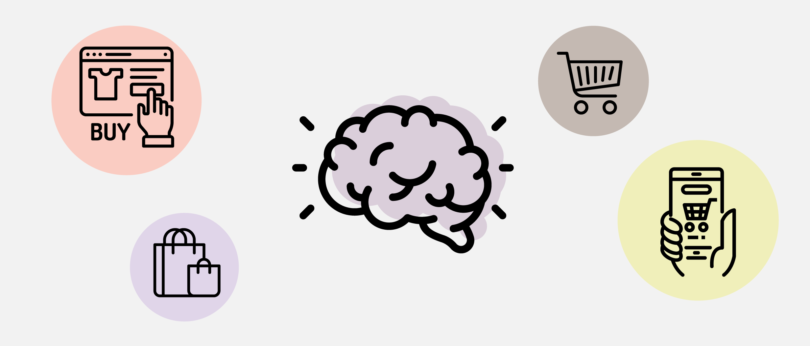
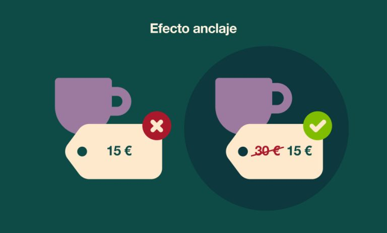
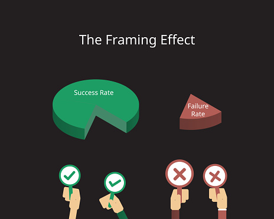
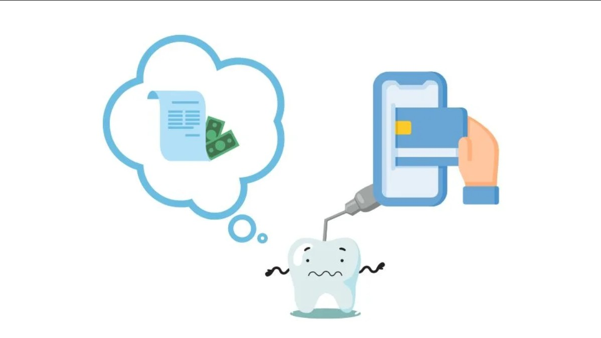
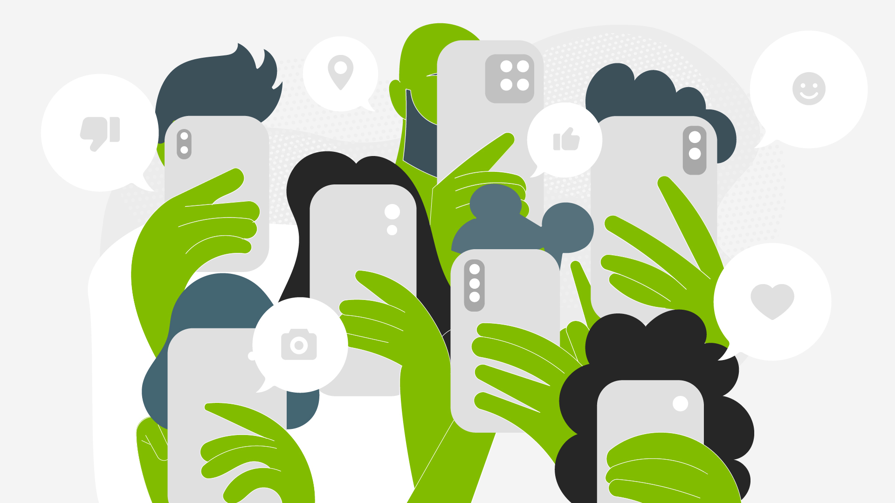
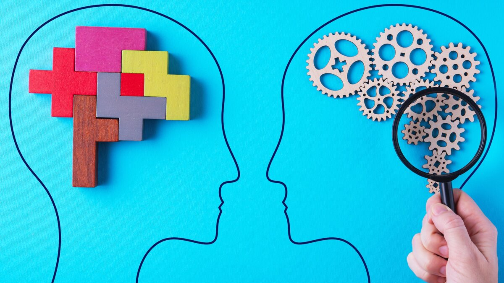

Cómo Nuestras Emociones Influyen en Nuestras Decisiones Financieras:
Introducción.
La toma de decisiones económicas rara vez es un proceso puramente frío y matemático. Aunque nos gusta pensar que evaluamos cada compra con absoluta lógica y neutralidad, la psicología moderna ha demostrado que el cerebro humano utiliza atajos mentales e impulsos emocionales que alteran de forma drástica nuestra percepción del valor y del riesgo.
El origen de los impulsos.
Los disparadores emocionales actúan como catalizadores inmediatos en el comportamiento de consumo. Cuando experimentamos estrés, aburrimiento o la búsqueda instantánea de gratificación, nuestro sistema de recompensa cerebral activa respuestas impulsivas que justifican el gasto innecesario antes de que el pensamiento crítico pueda intervenir.

El diseño de la oferta.
Las empresas y departamentos de mercadotecnia conocen perfectamente estos patrones biológicos. Mediante la arquitectura de decisiones, diseñan entornos físicos y digitales con precios estratégicos, descuentos ficticios y ofertas por tiempo limitado destinados a alterar nuestro juicio lógico.
El sesgo de anclaje.
Uno de los fenómenos más comunes es el efecto ancla. Ocurre cuando la primera cifra que vemos (como un precio original elevado pero tachado) condiciona totalmente nuestra evaluación sobre si la cifra final es una "oportunidad imperdible", al margen de su verdadero costo real de producción.


La aversión a la pérdida
Los seres humanos sentimos el dolor de perder dinero con el doble de intensidad que la satisfacción de ganar esa misma cantidad. Esta asimetría psicológica es explotada mediante las pruebas gratuitas o suscripciones, donde cancelar se percibe internamente como una pérdida dolorosa.
La falacia de los costos hundidos
Mantener una mala inversión solo porque ya hemos gastado tiempo o dinero en ella es otro error habitual. Esta trampa cognitiva nos impide cortar pérdidas a tiempo, obligándonos a seguir desembolsando recursos en proyectos o hábitos que ya no aportan valor real.



La ilusión de dinero plástico
Pagar con tarjetas de crédito o plataformas digitales reduce significativamente el "dolor del pago" físico. Al no ver salir billetes tangibles de nuestra billetera, la fricción psicológica disminuye, incrementando el ticket promedio de compra sin que se perciba el impacto inmediato.
El fenómeno FOMO (Miedo a quedar fuera)
La presión social refinada por los entornos digitales intensifica el consumo por estatus. Al observar los patrones de vida expuestos en redes sociales, el consumidor promedio ajusta su gasto para encajar en estándares que frecuentemente sobrepasan su capacidad de liquidez real.
El sesgo del presente
Incurrimos en el descuento hiperbólico al valorar desproporcionadamente las recompensas inmediatas frente a los beneficios futuros. Este sesgo dificulta enormemente la planificación del ahorro y la inversión a largo plazo, priorizando placeres volátiles del presente.
Estrategias de desintoxicación financiera
Para contrarrestar estas distorsiones emocionales, es indispensable introducir fricción deliberada en el proceso de compra. Aplicar la regla de las 48 horas antes de concretar una adquisición no planificada permite que el sistema analítico recupere el control sobre el impulso.
Automatización de decisiones
Otra táctica sumamente efectiva consiste en automatizar el ahorro a principios de mes. Al predeterminar las transferencias hacia fondos de inversión o reservas de emergencia, se elimina la necesidad diaria de emplear la fuerza de voluntad contra las tentaciones del mercado.
Conclusión y soberanía económica
Comprender la psicología detrás de nuestro billetero no busca eliminar el consumo, sino devolvernos la soberanía sobre nuestras decisiones. Reconocer nuestros propios sesgos es el primer paso hacia una salud financiera sostenible y alineada con metas reales.
Título Acción: Domina tus Sesgos Cognitivos
Aprende las claves definitivas para proteger tus finanzas personales frente a las trampas del neuromarketing.